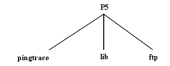

Submission Guidelines
Programming Assignment #5
Implementation Requirements
1- You should submit a tar file that contains the following directory tree:

|
|
|
|
|
|
|
|
2- There are three makefiles in this project, one in each directory. The files contain the following options:
3- Your code should use the
garb_sendto routine to send packets. You should never use sendto function in your code.4- Like the previous programs, you should submit a tar file. The tar file should include the directory tree descriped above.
The code has to compile and run on the CSC cluster, i.e. on Alpha stations
Questions
1- How are you going to test my project?
2- How do I submit my project?
~jh41701/BIN/submit
Finally to submit your program, type
submit 5 filename
There is only one filename which is the tar file.
Grading Guidelines
These are only guidelines to give you a hint about what I am going to test in your code. The points may be redistributed later during grading the assignment.
|
Proper submission. |
5 |
|
Readability and comments. |
15 |
|
ping & traceroute application. |
10 |
|
FTP application: sending a small size file |
20 |
|
FTP application: sending large file |
10 |
|
FTP application: sending multiple files. |
10 |
|
FTP application: receiving data. |
10 |
|
Error management (corrupted data, duplicate data packet, discarded data packet, ?etc). You should use garb_sendto routine to send all your IPv6 packets. |
40 |
Total points: |
120 |